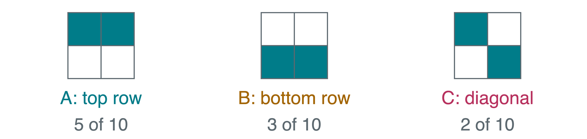
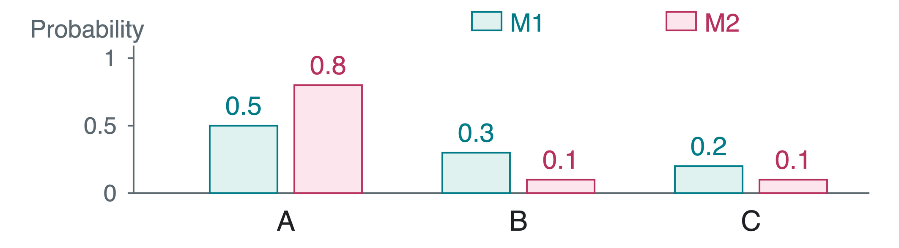
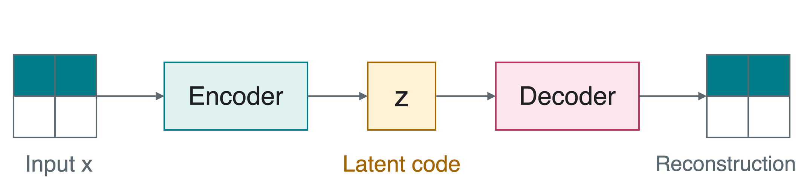
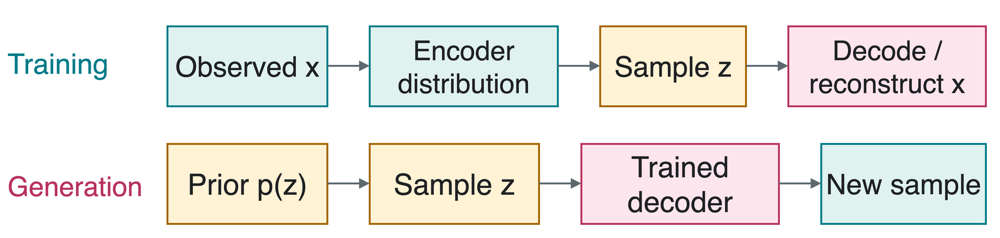
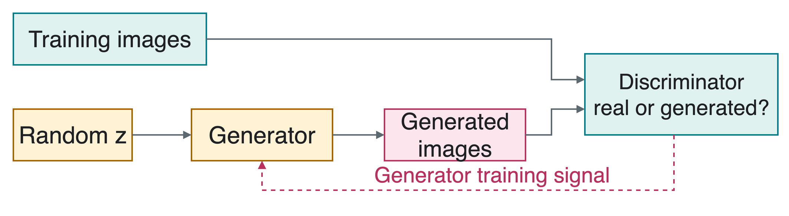
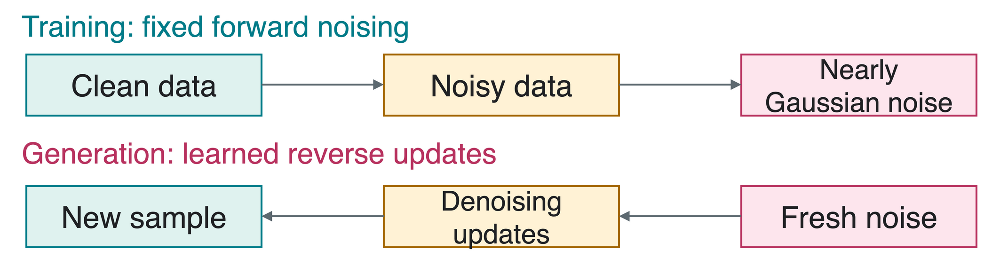
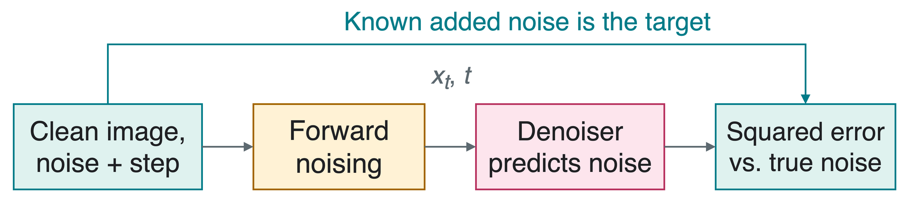
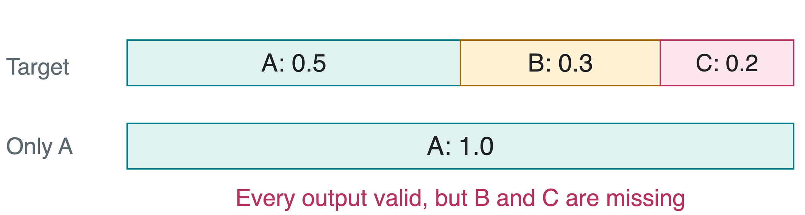

CS 463G & CS 663
(Intro to) AI
Lecture 35: Generative Machine Learning
Fall 2026
A discriminative model predicts a label for an existing image: “This is a seven.” A generative model learns what examples are plausible and how often they occur, so it can produce a sample: “Here is a handwritten seven.”

The counts show the data’s distribution: which patterns occur, and how often.
A sample is one random draw from the model’s learned distribution.
Both models can generate all three patterns. Which better matches the observed mix: 50% A, 30% B, 20% C?

Likelihood scores the fit to the whole dataset. M1 fits better: M2 favors A too strongly at the expense of the observed B and C images.
Choosing the most likely pattern always gives A. Sampling from M1 can also give B or C, though a small batch need not match the percentages exactly.
An autoencoder learns to reconstruct its input. Its encoder compresses the image into a latent code (a hidden representation, shown as z). Its decoder turns the code back into an image.

Training measures reconstruction error: how different the decoded image is from the original.
Good reconstructions do not give us a sampling recipe. An arbitrary code can land where the decoder has had little training.
A variational autoencoder (VAE) encodes each image as a distribution of possible codes. Training balances reconstructing the image with keeping those code distributions close to a prior, a chosen distribution such as a bell curve.

To generate, draw a code from the prior and decode it. There is no input image and no need to run the encoder.
Diederik P. Kingma and Max Welling (2013), Auto-Encoding Variational Bayes.
A generative adversarial network (GAN) trains two networks with competing goals:

To generate, pass a fresh random code to the trained generator.
Ian Goodfellow et al. (2014), Generative Adversarial Networks.
A diffusion model learns to reverse gradual corruption. Denoising means estimating cleaner structure from a noisy input.

A noise schedule sets the corruption levels during training. At generation time, a sampler uses the trained denoiser to take steps from noisy to clean.
Start from fresh noise, not from a corrupted photo. The result is a plausible new sample, not a unique image that was hidden in the noise.
Jonathan Ho, Ajay Jain, and Pieter Abbeel (2020), Denoising Diffusion Probabilistic Models.
Start with a real image. Add known noise at a chosen level. Give the model the noisy image and its noise level (shown as x_t and t), without giving it the noise itself.

Train the predictor by comparing its guess with the noise we added. Repeat with different images and levels of corruption.
We can create the training targets ourselves by corrupting clean images. We do not need people to label the noise.
| Model | What guides training? | How do we get a new image? |
|---|---|---|
| VAE | Reconstruct images and keep codes compatible with the prior. | Draw a code from the prior and decode it. |
| GAN | Improve the generator using feedback from a discriminator. | Draw a random code and run the generator. |
| Diffusion | Learn to denoise examples we deliberately corrupt. | Start from noise and refine it over a series of steps. |
In these examples, VAE and GAN generation use one decoder or generator pass. Diffusion uses multiple denoising passes.
Conditional generation gives the model extra information, called a condition, to guide what it produces.
| Condition | Possible output |
|---|---|
| Digit label: 7 | A handwritten seven, with a particular stroke or slant |
| Text prompt: “a red bicycle” | An image showing a red bicycle |
| Partial sentence: “The sky is …” | A plausible continuation |
For example, a conditional diffusion model can give the denoiser the prompt as well as the noisy image and noise level.
The same prompt can lead to different valid images. Conditioning guides the output; it does not guarantee that the model follows the request.
Quality asks whether individual samples look valid. Coverage asks whether the generator represents the variety of valid cases.

Mode collapse means generating too little of the data’s variety. In this example, every output is a valid A, but B and C never appear.
A gallery’s best image tells us little about coverage. Look at a batch of samples and count what is missing.
Held-out data was not used for training. Memorization means learning particular training examples in enough detail to potentially copy them.
| Check | What it reveals |
|---|---|
| Score held-out examples by negative log-likelihood (NLL), when available | A lower loss means the model gives higher probability to the unseen examples overall |
| Compare outputs with the most similar training images | Possible copies or repeated details |
| Inspect a batch of samples for quality, variety, and prompt following | Artifacts, missing cases, or ignored conditions |
| Ask people to rate samples using clear criteria | Whether people find the outputs useful or convincing |
A sharp image can still copy a training example or ignore its prompt. No single check catches every failure.
1. Coverage. We cannot tell from one image that all other digits are missing.
2. The decoder. Give it a code sampled from the prior.
3. We added the noise. Its value is known during training.